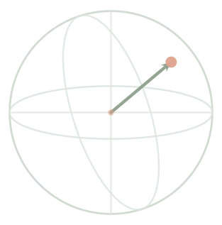
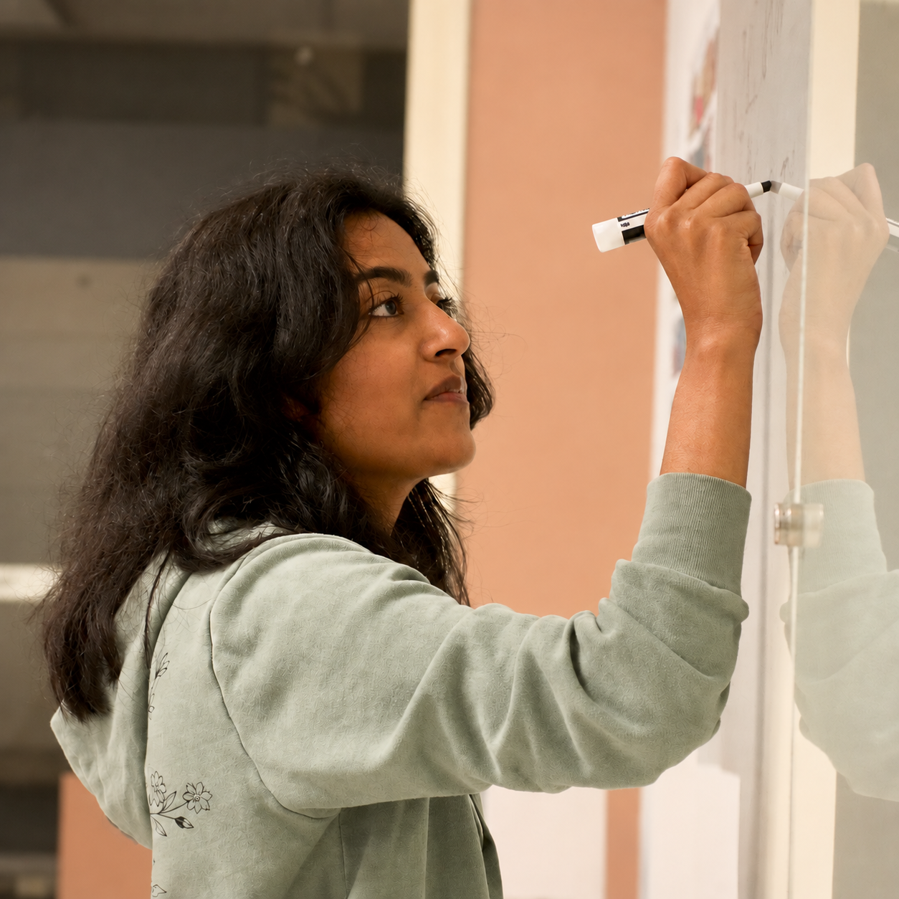
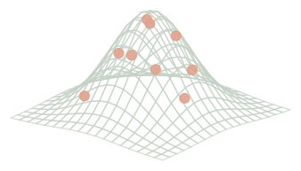
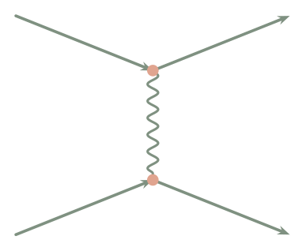

01
Quantum Learning
Learning interacting quantum systems directly from thermal or measurement data, with an emphasis on Hamiltonian reconstruction and fermionic systems.

Theoretical & Computational Physicist
I work on theoretical and computational approaches to learning physical systems from data, with interests spanning quantum many-body physics, statistical physics, lattice field theory, and quantum field theory. My recent work focuses on inverse problems: learning Hamiltonians, effective theories, and collective behavior directly from measurements or samples.

Learning interacting quantum systems directly from thermal or measurement data, with an emphasis on Hamiltonian reconstruction and fermionic systems.

Statistical inference for classical many-body systems, including learning couplings, effective theories, phase transitions, and renormalization-group flows.

My PhD work focused on quantum field theory, renormalization-group dynamics, and the structure of interacting field theories.
I am interested in research at the interface of many-body physics, statistical inference, field theory, and machine learning. You can find my code and current projects on GitHub. You can also find me on Google Scholar and LinkedIn. My email is shreyashukla [at] arizona [dot] edu.